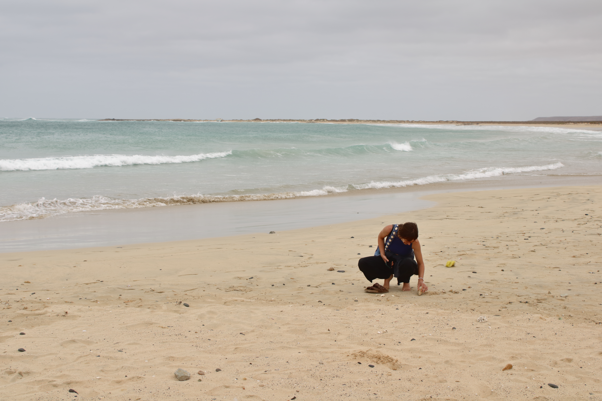
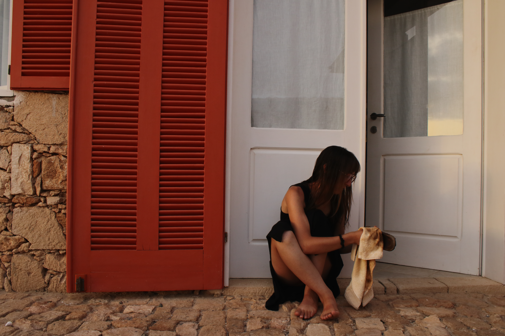
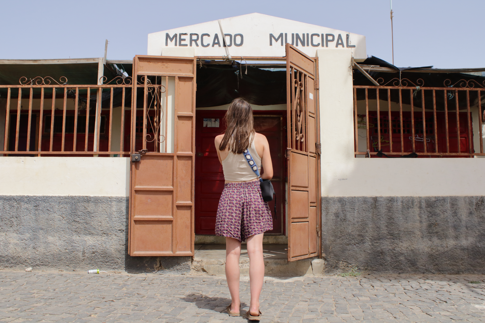

Bienvenue sur mon site web personnel !
Je suis actuellement étudiante en Techologies de la Traduction et de la Communication à l'Université de Genève.En 2021, j'ai obtenu mon Bachelor en Communication multilingue et, après quelques années de travail dans le monde de la traduction et de la localisation, j'ai décidé de reprendre mes études pour compléter ma formation.
Fascinée par les langues et la diversité culturelle, à l’âge de 18 ans, j’ai décidé de débuter une formation en communication multilingue à l’Université de Genève, ce qui m’a permis d’acquérir des compétences linguistiques et organisationnelles solides. Depuis 2021, je suis plongée dans le monde professionnel de la traduction et de la localisation. Quelques détails ci-dessous :
J'ai commencé mon parcus professionnel avec un stage de six mois chez Translated en tant que Account Manager, où je m'occupais du développement et du suivi des relations clients et j’assurais la présentation des services de traduction selon les besoins de chaque client.
Au sein de Translated, j’ai eu l’opportunité de changer de rôle et de devenir cheffe de projet localisation. Les raisons de ce changement se trouvent principalement dans des caractéristiques personnelles particulièrement aptes à ce métier, telles que l’organisation, la rigueur et la curiosité.
En tant que cheffe de projet en localisation, j’ai eu l'opportunité de gérer des projets multilingues complexes de A à Z, en coordonnant les équipes, les ressources et les processus pour garantir la qualité, le respect des délais et la satisfaction des clients. Le rôle que j'ai recouvert englobe la planification stratégique, la budgétisation, la supervision linguistique ainsi que la gestion de projets liés à l’intelligence artificielle. La communication avec les clients et avec les linguistes, tout en contribuant au développement de collaborations durables et efficaces, a été également un aspet fondamenatal de ce parcours.
Retrouvez plus d'informations sur mon parcous ou contactez mois sur :


